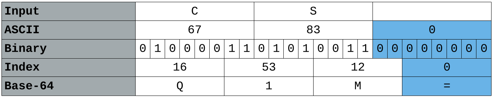

1 Introduction
Cryptography has always been about message confidentiality i.e. making sure that a message can only be understood by the sender and/or its intended recipient. It typically involves converting a message into an incomprehensible format and then that process being reversed by the recipient. A good cryptography system should leave a potential eavesdropper with a sense of helplessness i.e. they should feel like they don’t have the time or energy to figure out what the message is. Of course the standard for “time or energy” has changed drastically with computers and what seemed like a lot of time or energy doesn’t seem like a lot if you have a computer and know how to write a few scripts. However, computers also allow us to create even more complicated encryption systems. Another thing to consider is that even with computers, there are categories of problems or algorithms that are difficult for a computer to solve. Recall how complex it was to solve a towers of hanoi problem (from CSC 220 and CSC/CYEN 131) even when the algorithm was very simple to write/understand. A good cryptography system might be easy to understand (i.e. how it works), but should still leave us (and our computers) feeling like there isn’t enough time/RAM to figure out the original message.
Definitions:
- cryptology: enciphering and deciphering
- cryptography: making a cipher system
- cryptanalysis: breaking a cipher system
- encryption: scrambling a message
- decryption: unscrambling a message
- plain text: original “readable” message
- cipher text: encrypted “unreadable” message
- cipher: algorithm for performing encryption or decryption
2 History
Classic cryptography used pen, paper and perhaps simple mechanical aids. As we discuss them, try and see if you can figure out how we would break the cipher and how complicated it might be given current technology i.e. current definitions of “time and energy”. The highlighted encrypted messages are for you to try and decrypt.
2.1 Hieroglyph
This was used from around 3200BC to about 400AD. Utilized images or symbols to represent messages that could only be interpreted by those who knew what the symbols meant. Of course this is no different from writing in a language. The more people know that language, the less effective it is at keeping messages secret.
2.2 Atbash cipher
This was used from about 500BC to 1300AD. Its a type of substitution cipher where the order of the alphabet is reversed i.e. A becomes Z, B becomes Y, etc. Examples of it can actually be found in the bible 1.
rhm’g xibkgltizksb ufm?
$ echo {z..a} | tr -d ' ' # to create the character set z through a.
$ echo "abcde" | tr a-z "zyxwvutsrqponmlkjihgfedcba"2.3 Scytale cipher
This was used around 7th century BC. Messages were written on strip of parchment wrapped round a rod. When strip was unwrapped, the message was unreadable unless it was re-wrapped around a rod of similar dimensions.
Sdeeeiootyrdnnmhdbwgzeareatostaithoattncimihhbhs
2.4 Caesar cipher
Also a substitution cipher. Named after the first famous person to use this technique. It typically involves replacing a character with another character in the same character set but identified by shifting the alphabet over by a specific number of positions. Caesar used to replace A with D, B with E, C with F, …, X with an A, Y with a B, and Z with a C. Because the alphabet was rotated by 3 positions, this specific version can be called a rot-3 cipher. One of the most common Caesar ciphers is the rot-13 because the alphabet is reflected i.e. it is it’s own inverse.
diwtgh hpxs: durdjght xi xh
$ echo "abcde" | tr a-z d-za-c #rot-3
$ echo "abcde" | tr a-z n-za-m #rot-132.5 Sliding shift cipher
The issue with Caesar is that it is easy to break these days. You only need to look at 25 different possibilities to decipher it visually. A sliding shift cipher attempts to make this more difficult by employing a different shift for each position in the plain text string. For example, the first letter is encoded using rot-1, second letter using rot-2, third letter using rot-3, etc. One doesn’t have to start at 1, but the increase size is typically 1. However, If I know that the cipher is the sliding shift cipher, breaking it is not that hard.
2.6 Vigenere cipher
This was used from about 1553-1863. Each letter of the plain text was encoded by rotating the alphabet based on a key or passphrase. For example, if the key was “key”, then the first letter would be gotten from a rot-10 alphabet i.e. where a became k, b became l, c became m, etc. The second letter would be gotten from a rot-4 alphabet i.e. where a became e, b became f, c became g, etc. The key would be repeated as many times as necessary to encode the entire plain text. A cipher disk or vigenere table (such as the one shown below) can be used for manual encryption/decryption. For example, the plain text “how does this work” can be encrypted using the key “vigenere”.
| Plain text | H | O | W | D | O | E | S | T | H | I | S | W | O | R | K |
|---|---|---|---|---|---|---|---|---|---|---|---|---|---|---|---|
| Key | V | I | G | E | N | E | R | E | V | I | G | E | N | E | R |
| Cipher text | C | W | C | H | B | I | J | X | C | Q | Y | A | B | V | B |
In the table above, the column headers is the plain text, and the row headers is the key, and where the corresponding column and row intersect is the cipher text. To encrypt a plain text character l and key character n, identify where the column l and row n intersect which is y.
To decrypt, identify the cipher character on the appropriate key row, and then match it to the corresponding column header. For example, the cipher character p with the key character x becomes the plain text character s.
2.6.1 Why use manual when we have computers?
To take advantage of the computational power now available to us, however, it is significantly easier/faster if we use math.
If we map each character of the plain text and cipher text to a number (e.g. the number shown in the table above), then the rotation (or look up in the vigenere square) is essentially the same as adding those two numbers and looking up the corresponding letter.
For example we see that plain text character l has a value of 11 and key character n has a value of 13. The sum of those two numbers is 24 which maps to y. This is an identical result to what we saw with the vigenere square. If the sum of the two numbers is more than 25, then we wrap around and continue from the beginning i.e. % 26.
Decrypting is just a matter of doing the reverse i.e. subtract the numerical value of the key character from the numerical value of the cipher text character to get the numerical value of the plain text character. Make sure to wrap around if this difference is negative.
More formally, if \(P\) is the plain text, \(K\) the key, \(C\) the cipher text, and the subscript \(i\) the character in the ith position of any of those three, then.
\[C_i=(P_i+K_i)\%26\]
To decrypt.
\[P_i=(26+C_i-K_i)\%26\]
The 26 is added just to make the math of the wrap around consistent across different programming languages. Some languages give different results for the modulo of a negative number.
As an example, if our text is “cyberstorm is going to be bussin” and our key is “cryptids”
\[ P_0 = c, K_0 = c → C_0 = (2+2)\%26 = 4 = e \\ \]
\[ P_1 = y, K_1 = r → C_1 = (24+17)\%26 = 15 = p \]
\[ P_2 = b, K_2 = y → C_2 = (1+24)\%26 = 25 = z \]
\[ P_3 = e, K_3 = p → C_3 = (4+15)\%26 = 19 = t \]
\[ P_4 = r, K_4 = t → C_4 = (17+19)\%26 = 10 = k \]
\[ P_5 = s, K_5 = i → C_5 = (18+8)\%26 = 0 = a \]
\[ P_6 = t, K_6 = d → C_6 = (19+3)\%26 = 22 = w \]
\[ ... \]
CipherText = epztkawgtd gh zwlfi km qx jxkuzl
If you wanted to decrypt “avq nhcu htfdtlarj wjcs ucvkke. Ft’l maltr. Ld vis.” using the same key
\[ C_0 = a, K_0 = c → P_0 = (26+0-2)\%26 = 24 = y \]
\[ C_1 = v, K_1 = r → P_1 = (26+21-17)\%26 = 4 = e \]
\[ C_2 = q, K_2 = y → P_2 = (26+16-24)\%26 = 18 = s \]
\[ C_3 = n, K_3 = p → P_3 = (26+13-15)\%26 = 24 = y \]
\[ C_4 = h, K_4 = t → P_4 = (26+7-19)\%26 = 14 = o \]
\[ C_5 = c, K_5 = i → P_5 = (26+2-8)\%26 = 20 = u \]
\[ C_6 = u, K_6 = d → P_6 = (26+20-3)\%26 = 17 = r \]
\[ … \]
Plain text = yes your …
Since many programming languages actually store characters as integers, getting the numerical value of the character from the table above is often as simple as subtracting the integer value of ‘A’ or ‘a’.
In c++ for example, ‘P’ - ‘A’ = 80 – 65 = 15.
Historically speaking, cryptography was almost always concerned with hiding written language text. Computers have changed the game in three ways
They do things faster and so allow us to decrypt cipher text messages faster
They also allow us to come up with more complex ciphers i.e. ciphers that would be too complicated to carry out by hand in a realistic time frame
They allow us to encrypt any kind of data that can be represented by 1s and 0s. ANYTHING. Not just text but any kind of digital file. One could argue this is the main change that computers brought to the cryptography field.
3 Encoding
Cryptography is not only about hiding information. Sometimes its just about representing information in a manner that is convenient to work with. For example, since computers only deal with 1s and 0s, we have encoding schemes to represent information like characters in 1s and 0s.
The most common encoding format is ASCII (American Standard Code for Information Interchange) which is based on the English alphabet. Its original format only required 7 bits to represent any thing that might be represented i.e. numbers, lower case and upper case letters, punctuation, and control characters (which were non-printable).
Later as 8 bit storage became the norm, ASCII was extended to 8 bits which allowed for double the encodings.
Common conversions are
A = 65 = 01000001, B = 66 = 01000010, a = 97 = 01100001, b = 98 = 01100010
Another common encoding scheme is base-64. This particular scheme was birthed from a need to send any kind of binary information (such as attachments in en email) along a channel that only carried text. One way to identify this scheme is that the file will be made up entirely of characters, numbers and two signs e.g. + and /. Some files will also end with one or more = signs.
The process of converting any binary stream to base-64 is similar to the conversion from binary to hexadecimal you covered in CSC/CYEN 131 i.e. group the bits, and then look up the mapping for that group (or the mapping for the numerical value of that group). It should not come as a surprise that for base 64, we shall be looking at groupings of 6 bits. \((2^6 = 64)\)
| Value | Char | Value | Char | Value | Char | Value | Char |
|---|---|---|---|---|---|---|---|
| 0 | A | 16 | Q | 32 | g | 48 | w |
| 1 | B | 17 | R | 33 | h | 49 | x |
| 2 | C | 18 | S | 34 | i | 50 | y |
| 3 | D | 19 | T | 35 | j | 51 | z |
| 4 | E | 20 | U | 36 | k | 52 | 0 |
| 5 | F | 21 | V | 37 | l | 53 | 1 |
| 6 | G | 22 | W | 38 | m | 54 | 2 |
| 7 | H | 23 | X | 39 | n | 55 | 3 |
| 8 | I | 24 | Y | 40 | o | 56 | 4 |
| 9 | J | 25 | Z | 41 | p | 57 | 5 |
| 10 | K | 26 | a | 42 | q | 58 | 6 |
| 11 | L | 27 | b | 43 | r | 59 | 7 |
| 12 | M | 28 | c | 44 | s | 60 | 8 |
| 13 | N | 29 | d | 45 | t | 61 | 9 |
| 14 | O | 30 | e | 46 | u | 62 | + |
| 15 | P | 31 | f | 47 | v | 63 | / |
To demonstrate this conversion, we shall start with text as represented using ASCII. Even though we are using text to begin with, this technique can be used with any digital file since all digital files are made up of 1s and 0s.
Let’s say we want to convert the string “abc” from ascii to base-64.
Which means it would be encoded as YWJj.
The original bits (which in this case were gotten by encoding the characters in 8-bit ASCII) are placed next to each other, grouped in 6s, and then each of those groups is converted back to a decimal number and looked up in the base-64 table.
$ echo -n "abc" | base64 # -n is to remove the newline characterNotice, however, that 8 bits for 3 characters sums up to 24 bits, which is a perfect multiple of 6 (the group size) so every bit is converted accurately. That is not always the case. If the number of bits of the original message is not a perfect multiple of 8, then we have to pad the original message until we get to a number of bits that is a multiple of both 6 and 8 (8 bits because we’re using 8-bit ascii)
As an example, let’s say we wanted to convert the string “x”
The first 6 bits make sense: they convert to 30 which maps to “e”. The next two bits are part of the original message and require 4 padded bits. They convert to a 0 which maps to “A”. The next 12 bits, however, are made up entirely of bits that were added just for padding. To convert them directly to base-64 would be erroneous since there were not part of the original message. Therefore they are mapped to the symbol “=” which you will notice was not part of the original base-64 character set. Seeing a “=” symbol at the end of a base-64 conversion is a way to tell that padding was done and therefore one would not consider those extra bits when converting back from base-64.
Let’s try another example in which we convert the string “CS” to base-64.

We see it converts to Q1M= in base-64.
What about going backwards i.e. from base-64 to ASCII? We shall try “RU4=”
We see it converts to “EN”
$ echo -n "RU4=" | base64 -d # -d is to decode base-644 Cryptography today
The Internet created a need for an even more secure cryptography. We now all use a system over which no single entity has complete power and bad actors can easily get access to the information you are sending to or receiving from someone else. Additionally we also need ways of confirming that the person we are communicating with is in fact the person we intended to communicate with, or the file we requested is in fact the file we received. All these issues/problems leverage modern cryptography in some form.
4.1 Symmetric-key Cryptography
Symmetric-key cryptography works like most of the classic cryptography approaches we discussed earlier i.e. both sender and receiver need to share the key in order to encrypt and decrypt the message. Depending on the algorithm, the input stream can be encrypted as it is experienced (stream ciphers) i.e. a byte or letter at a time OR it can encrypt them in blocks of bits with each block encrypted as a single unit (block ciphers).
Examples of algorithms in this category include AES, 3DES, Serpent, Twofish, Blowfish
This is typically a fast cryptography approach. The only issue is that it is based on the assumption that the two people trying to communicate were able to share a key privately. Doing so requires a private channel and yet we’re trying to set up a private channel. Many times this is not possible for one reason or another e.g. physical separation.
4.2 Asymmetric Cryptography
Asymmetric cryptography is relatively newer and uses the idea of two keys. The two keys are linked in such a way that any message encrypted with one of them requires the second to be decrypted. Another characteristic of the keys is that you can not design (or guess) one of them from the other. This second characteristic is the whole crux of the system. One of the more common ways of guaranteeing that is the use of prime numbers/factors. It takes very long to identify whether a number is prime, and it takes even longer to identify the prime factors of a number (particularly a very large number). The process of encryption/decryption is therefore slightly different. The person who wants to send a message encrypts it with one key, and the person who wants to decrypt it uses the other key. The first key is called the public key because you provide that key to everyone and anyone. You do this so that anyone who wants to send you a message can be sure that you are the only person who can open it since you are the only person who has the other key (aptly called the private key)

There are two major advantages of this approach. First is that we don’t have to have met for you to communicate with me and know that our communication is private. There are servers dedicated to storing people’s public keys, people attach them to emails, etc. So if you want to communicate with me, all I have to have done is have published my public key somewhere.
The second advantage is that this technique allows us to solve the problem of confirming the identity of someone if the encryption/decryption process is reversed. Person A uses their private key to encrypt a broadcast message. Anyone who has access to their public key (which everyone does) can now use that key to decrypt the message. It might be weird because it is not a secret message and anyone can decrypt it but the cool thing about it is that we all know that no-one else could have created that message in the first place since only you have the private key. In that regard, the public/private key approach allows us to have digital signatures which help us to determine the authenticity of a message. It allows us to answer questions like “is this message from a trusted source?” and “has this message been changed in transit by someone pretending to be the trusted source?”.
Examples of the public/private key systems include Diffie-Helman, RSA, DSA (Digital Signature algorithm), ECDSA (Eliptical curve DSA). You can find some of these details in the certificate details of your web browser.
4.3 Hashing
Hashing is another way cryptography is used today. Recall from CSC 220 that hashing is a central part of how hash tables work. For hash tables, hashing converted a key of any length/type into a valid index in the table where the value would be stored. Outside of hash tables, hashing is used to translate data of any size into a unique fixed size string output. Any good hashing function works in such a way that this process cannot be reversed. At first glance, this seems counter productive i.e. why scramble up a long message into a short string of gibberish if I cannot unscramble that gibberish back to get the message? The reason is that a good hash function will scramble any message into a unique string of gibberish. I’ll give you two examples of where this functionality is actually helpful.
Imagine you downloaded an ISO file for Linux Mint and it took 2 hours to download on your home internet (in fact imagine how long it would take on the slow internet we had not that long ago). It would be very painful if you took a full day installing the operating system only to realise that the ISO file was corrupted in some way during the download and you’ll have to start the whole download and install process again with the hope that it doesn’t happen again. What many servers that store large files will do is provide a hash of that file. That way once you have downloaded the file, you can run it through the hash function, a process which takes a very short time, and confirm if the hash you got is identical to the hash that the server said you should get. If so, then your file was not corrupted. If not, then you need to re-download and not waste your time installing the corrupted file.
Another place that hashing is used is in the storage of passwords. Given that bad actors can easily get access to systems, it would be bad if they got access to every password that was ever used on that system in plain text. What most servers/systems will do is actually store a hash of your password instead. That way there is no way the bad actors can get your passwords. They just get the hashes and there is no way to get the passwords when you have the hash. The only thing they can do is run a bunch of passwords they know of through the hashing function and hope that one of them hashes to the exact same thing as your hash. And if that happens then they have figured out your password. There are ways to deal with this but they are beyond our discussion right now.
There are multiple hashing functions being used these days. These hash functions are typically evaluated based on the number of collisions they have (which should be very low), and how difficult they are to reverse (which should be impossible).
MD5 (Message Digest algorithm 5) converts large data into a string of 128 bits. As early as 1993 researchers found vulnerabilities in it (such as collisions) and so it isn’t used much for high security cryptography but rather for checksums to verify data.
$ echo -n "hello world" | md5sum # any small difference in input
$ echo “hello world” | md5sum # should produce a very different hashSHA – Secure Hash Algorithms – is a family of hashing functions. SHA1 is similar to MD5 and was pretty much abandoned as of 2010. SHA 256 and SHA 512 are probably some of the more common ones and are named after the length in bits of the output they produce.
$ echo -n "hello world" | sha1sum
$ echo -n “hello world” | sha256sum
$ echo -n “hello world” | sha512sumThis has been a lot of information but hopefully it is very intriguing information. Some of these topics we shall cover in more detail later in the quarter with more application. Others you’ll just have to wait till you see them in classes like CSC 444/544/CYEN 406 2.